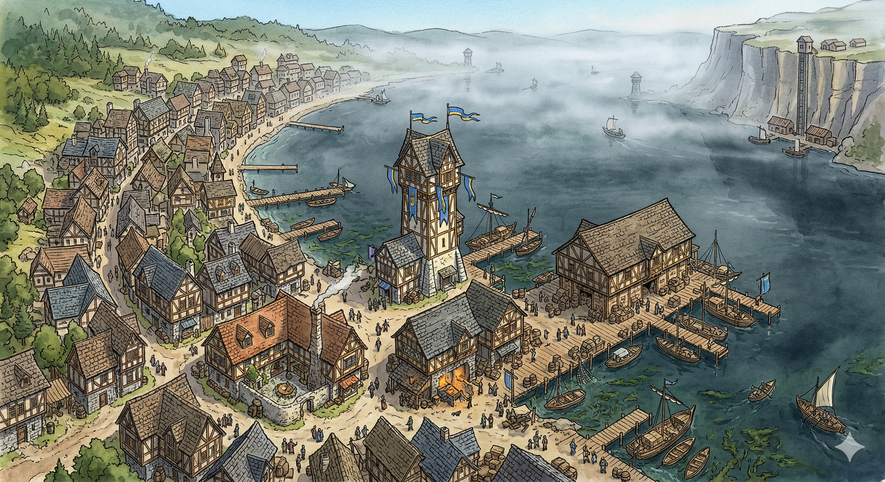

Settlement
Ardenville

Overview
Ardenville is a lakeside port town on the northern shore of Lake Arden in Crestfall. A primary fishing and transport hub for the lake, and a secondary trade connection to Highreach.
Geography
- Situated entirely along the northern shoreline of Lake Arden
- Shallow waters near the docks support fishing and moorage
- Visibility over the lake is often reduced due to persistent mist
- A steep cliff rises at the southern edge of the lake, separating Ardenville from the Highreach plateau above
Infrastructure
- Docks and Piers: Wooden piers line the shoreline and accommodate fishing vessels and cargo boats of varying sizes.
- Watchtowers: Defensive watchtowers are positioned along the shore, extending toward areas of reduced lake visibility.
- Cliffside Port: A small port and warehouse sit at the base of the southern cliff.
- Cargo Elevator: A manually operated elevator transports select goods from the cliffside warehouse up to Highreach. Access to the elevator is regulated, and usage fees apply.
Economy
- Fishing: Primary industry, supplying both local needs and exports.
- Lake Trade: Goods are transported across Lake Arden between nearby settlements.
- Goods Transfer: Ardenville serves as a collection point for supplies routed to Highreach via the cliffside elevator.